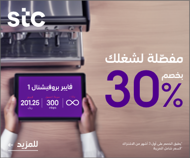

مكافحة المخدرات تطيح بمروّجي "إمفيتامين" في الشرقية
قبضت المديرية العامة لمكافحة المخدرات على مواطنين بالمنطقة الشرقية لترويجهما مادة الإمفيتامين المخدر، وأوقفا واتُخذت الإجراءات النظامية بحقهما، وأحيلا إلى النيابة العامة. وتهيب الجهات الأمنية بالإبلاغ عن كل ما يتوافر من معلومات لدى المواطنين والمقيمين عن أي نشاطات ذات صلة بتهريب أو ترويج المخدرات، وذلك من خلال الاتصال بالأرقام (911) في مناطق مكة المكرمة والرياض والشرقية و(999) في بقية مناطق المملكة، ورقم بلاغات المديرية العامة لمكافحة المخدرات (995)، وعبر البريد الإلكتروني (Email: 995@gdnc.gov.sa)، وستعالج جميع البلاغات بسرية تامة.

جامعة الأمير سلطان تواكب صعود المملكة في مؤشر ستانفورد للذكاء الاصطناعي
تواكب جامعة الأمير سلطان التقدّم المتسارع الذي تحققه المملكة في مؤشر ستانفورد 2025 للذكاء الاصطناعي، مؤكدة دورها الأكاديمي والبحثي الفاعل في دعم التوجّه الوطني نحو الابتكار والتقنية، من خلال مبادرات استراتيجية ومساهمات نوعية تتماشى مع مستهدفات رؤية السعودية 2030. وفي هذا السياق، أولت الجامعة اهتمامًا خاصًا بتمكين المرأة في مجالات الذكاء الاصطناعي وعلوم البيانات، حيث نظّمت مؤتمر المرأة الدولي في علم البيانات (WiDS)، الذي يُعد من أوائل وأبرز المؤتمرات المتخصصة في المنطقة. كما شاركت الجامعة بفعالية في الاحتفاء باليوم الدولي للمرأة والفتاة في العلوم، دعمًا لجهود منظمة اليونسكو في تعزيز دور المرأة في قيادة أبحاث الذكاء الاصطناعي المرتبطة بالاقتصاد الأخضر والتنمية المستدامة. وتبرز مساهمة الجامعة في تأهيل الكفاءات الوطنية المتخصصة من خلال مجموعة من البرامج الأكاديمية المتقدمة، مثل مسار الذكاء الاصطناعي وعلم البيانات في مرحلة البكالوريوس، وبرنامج الدكتوراه، إلى جانب تقديم برامج تدريبية وورش عمل ومعسكرات مكثفة تُركّز على الجوانب التطبيقية للذكاء الاصطناعي، ما يساهم بشكل مباشر في تلبية الطلب المتزايد على الكفاءات المتخصصة في هذا المجال الحيوي. ومن جانب آخر، تعمل الجامعة على استقطاب نخبة من الكفاءات البحثية والأكاديمية من جامعات عالمية مرموقة مثل أوكسفورد، كيمبردج، جامعة واشنطن، ستانفورد، وغيرها، ما يعزز بيئتها التعليمية ويثري تجربتها البحثية. وقد دشّنت الجامعة مبادرة الذكاء الاصطناعي بالتعاون مع جامعات عريقة مثل MIT، بيركلي، ستانفورد، وإمبيريال كولج لندن، في خطوة تعكس التزامها بالتميز العلمي والانفتاح على أفضل الخبرات الدولية.

لأول مرة في تاريخ التعليم: تقارير أداء المدارس في متناول أولياء الأمور عبر "مستقبلهم".. خطوة تاريخية نحو الشفافية
لأول مرة في تاريخ التعليم السعودي العريق، تخطو المملكة خطوة تاريخية نحو تعزيز الشفافية المطلقة وتمكين الأسر السعودية لتكون شريكًا أساسيًا وفاعلًا في العملية التعليمية. ففي منجز وطني يُضاف إلى سجل إنجازات الوطن، أتاحت هيئة تقويم التعليم والتدريب - عبر تطبيقها المبتكر "مستقبلهم" - تقارير أداء شاملة لأكثر من 22 ألف مدرسة، يستفيد منها بشكل مباشر أكثر من مليوني ولي أمر. هذه الخطوة العملاقة ليست مجرد تطور تقني أو إداري، بل هي نقلة نوعية في مفهوم المشاركة المجتمعية في التعليم، وتعكس رؤية وطنية طموحة لتحقيق جودة تعليمية فائقة تمهد الطريق لمستقبل أكثر إشراقًا لأبنائنا وبناتنا. الشفافية: حجر الزاوية في صرح جودة التعليم تأتي هذه المبادرة التاريخية في صلب البرنامج الوطني للتقويم والتصنيف المدرسي، الذي يهدف إلى تقييم أداء مدارسنا الحكومية والأهلية والعالمية وفق أدق المعايير. ومن خلال هذه التقارير التي أصبحت متاحة الآن بسهولة عبر تطبيق "مستقبلهم"، يمكن لأولياء الأمور الاطلاع على بيانات مهمة مثل متوسط أداء طلبة المدرسة في الاختبارات الوطنية (نافس) واختبارات القبول الجامعي (القدرات العامة والتحصيل الدراسي). هذه البيانات لا توفر فقط نظرة شاملة وشفافة عن أداء المدارس، بل تُشعل روح المنافسة الإيجابية بين المدارس وتعزز جسور الثقة بينها وبين أولياء الأمور، مما يصب مباشرة في تحسين جودة التعليم بشكل مستمر ومستدام. الأثر الاقتصادي لتعليم يتسم بالشفافية من منظور اقتصادي، تُعد هذه الخطوة الاستراتيجية استثمارًا بعيد المدى في أغلى ثرواتنا: رأس المال البشري، الذي يمثل الركيزة الأساسية لتحقيق طموحات رؤية السعودية 2030. فجودة التعليم ترتبط ارتباطًا وثيقًا بزيادة الإنتاجية وتعزيز القدرة التنافسية لكوادرنا الوطنية في المستقبل. وعندما تصبح المدارس أكثر شفافية وخضوعًا للمساءلة المجتمعية من خلال تقارير الأداء المتاحة لأولياء الأمور عبر "مستقبلهم"، فإن ذلك يحفزها بقوة على تحسين أدائها وتجويد مخرجاتها، مما ينعكس إيجابًا على قدرة أبنائنا على الانخراط بفاعلية في سوق العمل والمساهمة في دفع عجلة التنمية. كما أن تمكين أولياء الأمور من متابعة أداء المدارس وتقييمها بناءً على بيانات موثوقة عبر تطبيق "مستقبلهم"، يسهم في خلق بيئة تنافسية صحية بين المدارس، مما يدفعها لتبني أفضل الممارسات التعليمية والتربوية. وهذا بدوره يعزز جودة التعليم بشكل عام، ويُسهم بقوة في تحقيق التنمية الاقتصادية المستدامة التي تنشدها المملكة.

مجمع الدكتور سليمان الحبيب بالعليا يجري جراحة معقدة لتعديل فقرات العمود الفقري
نجح مجمع الدكتور سليمان الحبيب الطبي بالعليا، في إجراء عملية دقيقة لتعديل فقرات العمود الفقري "تحدب" لإنهاء معاناة مريض يبلغ من العمر 32 عاماً، عاش لسنوات يشكو من عدم القدرة على الوقوف بطريقة معتدلة وسليمة، بالإضافة إلى الشعور بالألم الشديد في منطقة العنق والفقرات الصدرية، خاصة عند الرغبة في النظر إلى الأمام ورفع الرأس، وذلك نتيجة وجود إنحناء شديد بالعمود الفقري. ذكر ذلك الدكتور عوض العوض استشاري جراحة العظام والعمود الفقري الحاصل على الزمالة الأمريكية والسويدية، رئيس الفريق الطبي المعالج. والذي أضاف بأنه عند وصول المراجع للعيادة، والإستماع إلى شكواه والإطلاع على تاريخه المرضي، تبين أن التحدب بالعمود الفقري بدأ يظهر عليه في فترة البلوغ، أي قبل 17 عاماً من الآن، وقد زار المراجع عدد كبير من المستشفيات في محاولة منه للعلاج، واصفين له برنامج علاج طبيعي وإعطائه الأدوية التحفظية والمسكنات فقط، دون تقديم حل طبي لإنهاء مشكلته الصحية. موضحاً بأن المراجع أخضع لفحوصات دقيقة بأشعة الرنين المغناطيسي M.R.I والأشعة العادية الرقمية Digital X-rays، والتحاليل المخبرية، والتي أكدت وجود تحدب شديد ، حيث تم شرح الخطة العلاجية للمريض وحاجته للتدخل الجراحي للعمل على تعديل حدة التحدب الأخذة في التفاقم مع مرور الوقت.

عسير.. الأفواج الأمنية توقف مواطناً لترويجه (14) كيلوجراماً من نبات القات المخدر
قبضت دوريات الأفواج الأمنية بمنطقة عسير على مواطن لترويجه (14) كيلوجراماً من نبات القات المخدر بمحافظة الفرشة، وتم إيقافه واتخاذ الإجراءات النظامية بحقه، وإحالته لجهة الاختصاص. وتهيب الجهات الأمنية بالإبلاغ عن كل ما يتوافر من معلومات لدى المواطنين والمقيمين عن أي نشاطات ذات صلة بتهريب أو ترويج المخدرات، وذلك من خلال الاتصال بالأرقام (911) في مناطق مكة المكرمة والرياض والشرقية و(999) في بقية مناطق المملكة، ورقم بلاغات المديرية العامة لمكافحة المخدرات (995)، وعبر البريد الإلكتروني Email: 995@gdnc.gov.sa، وستعالج جميع البلاغات بسرية تامة.

"تعليم نجران": اختبارات "نافس" 2025 تجرى خلال الفترة من 14 إلى 30 أبريل
أعلنت الإدارة العامة للتعليم بمنطقة نجران، عن مواعيد تطبيق اختبارات "نافس" الوطنية للعام 2025. أكد تعليم نجران أن الاختبارات، ستجرى خلال الفترة من 14 إلى 30 أبريل الجاري، وذلك على مدى أسبوعين، وتشمل طلبة الصفوف، الثالث الابتدائي، السادس الابتدائي، والثالث المتوسط. أوضح مدير عام التعليم بمنطقة تجران، الدكتور حسن بن محمد العلكمي، أن الاختبارات تهدف إلى قياس الأداء التعليمي للطلاب والطالبات، وتحسين جودة مخرجات التعليم، وتحفيز التنافس الإيجابي بين المدارس، إلى جانب قياس مؤشرات الأداء التعليمية، ضمن إطار برنامج تنمية القدرات البشرية.
